Cohort Analytics · Venture Studio
The program funnel, and the full reach around it.
As of 2026-06-04 · resolved across Mailchimp, Monday, Skool & Luma
Unlock Alabama runs an eight-week program for Alabamians building something new. 180 applied through the application form; 199 were accepted (177 builders + 22 guides); 192 joined the community; 52 have turned in weekly work. Around that cohort, the program has reached a wider audience — counted carefully below.
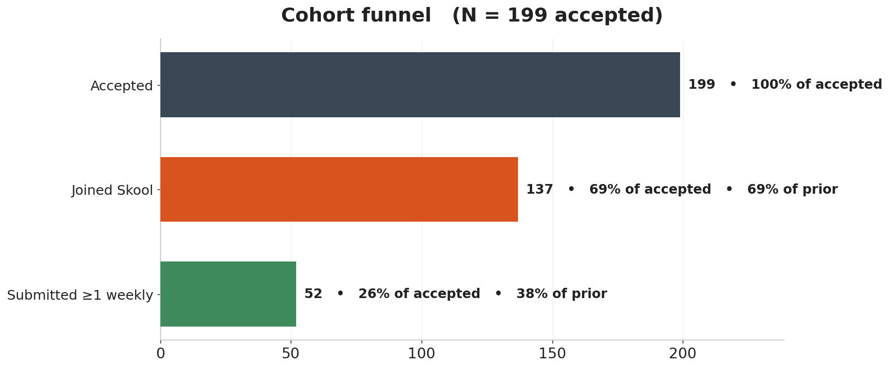
Across all four systems the program has touched 277 unique people, deduplicated. That figure is reach, not the cohort — most of the gap is people who joined the free Skool community or the mailing list without ever applying. Here's the exact composition:
Every touch from every source maps to one axis, so this measures engagement across everyone reached, not just applicants. Awareness = viewed something (on the list, joined Skool, RSVP'd); Engagement = interacted (opened an email, commented on a peer, checked in); Activation = created something (applied, submitted, posted); Retention = repeated one of those across ≥2 weeks or events.
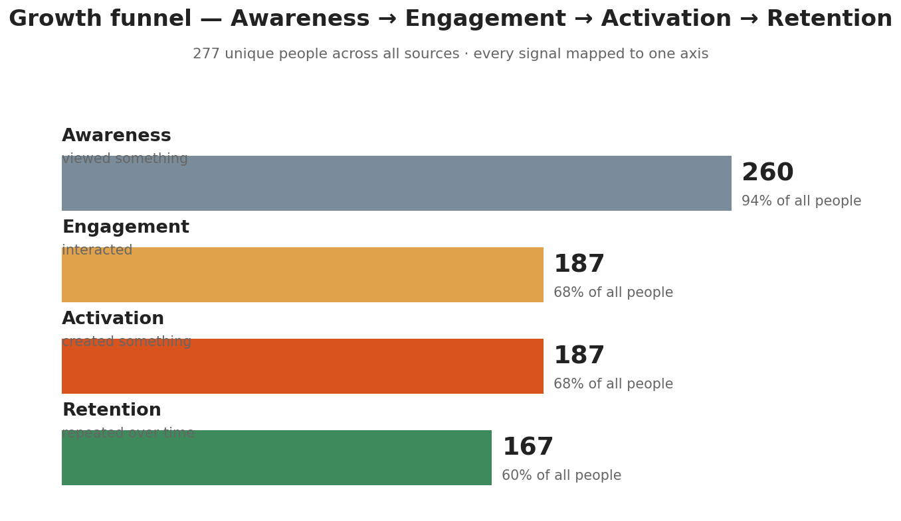
Retention splits across the axes — 166 by repeat email engagement, 13 by RSVPing to two or more Luma events, and 11 by submitting weekly work in multiple weeks. That last group — builders who keep shipping — is the one a cohort program lives or dies on.
Acceptance is a rolling decision sent as "Congrats, You're In!" email batches. 197 builders and guides have a confirmed acceptance email; 2 are selected but waiting on the next batch.
| Acceptance batch | Date | Sent | Opened | Open rate |
|---|
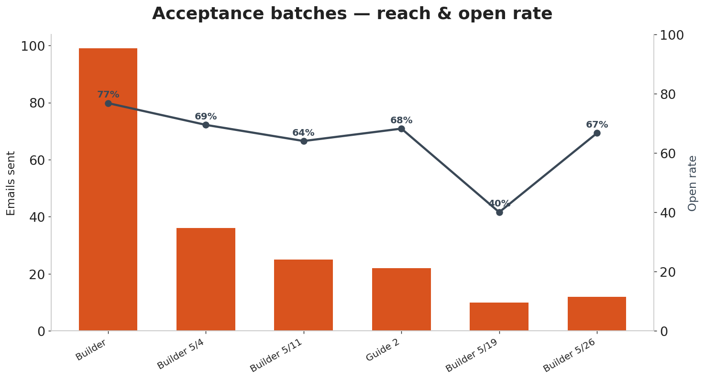
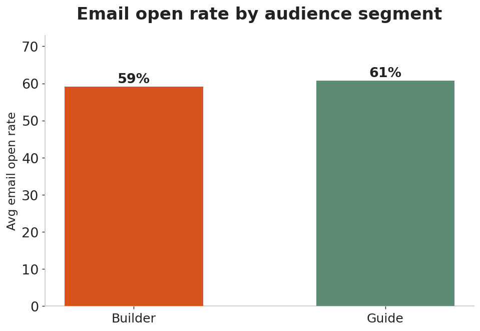
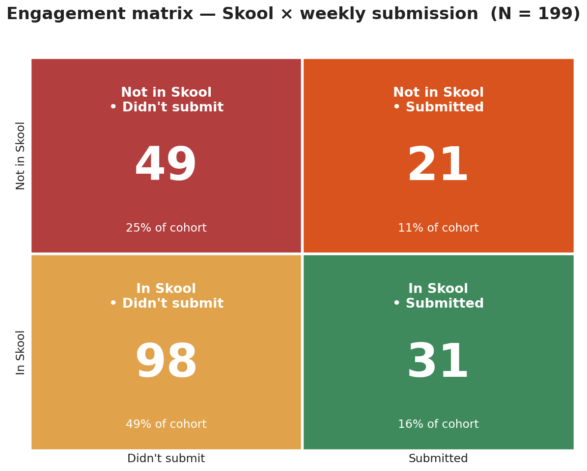
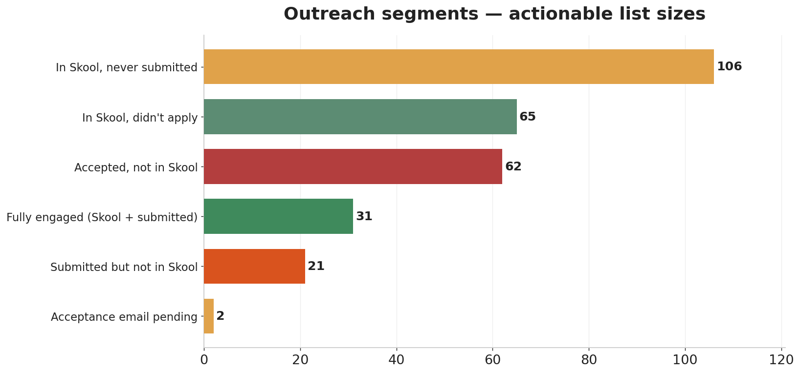
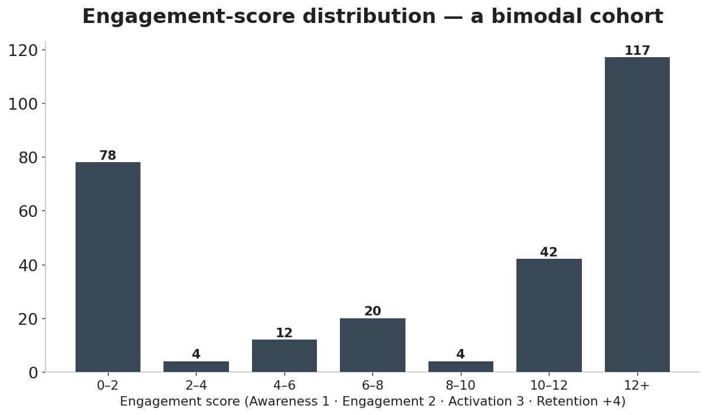
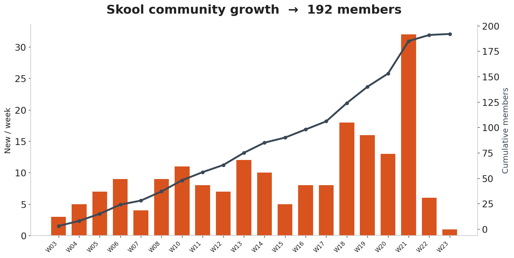
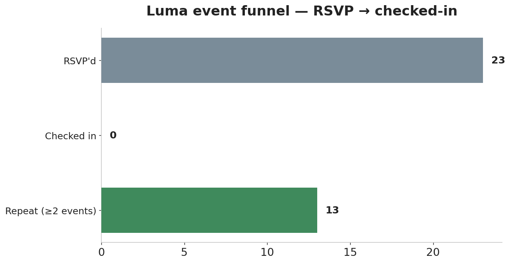
| Luma event | RSVPs |
|---|
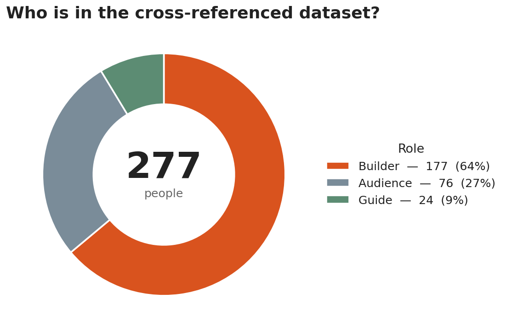
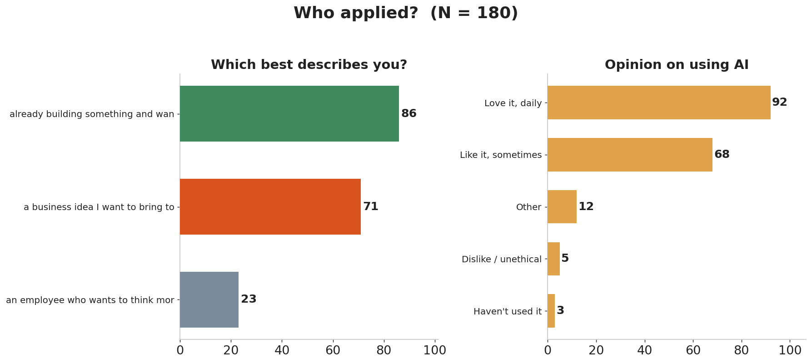
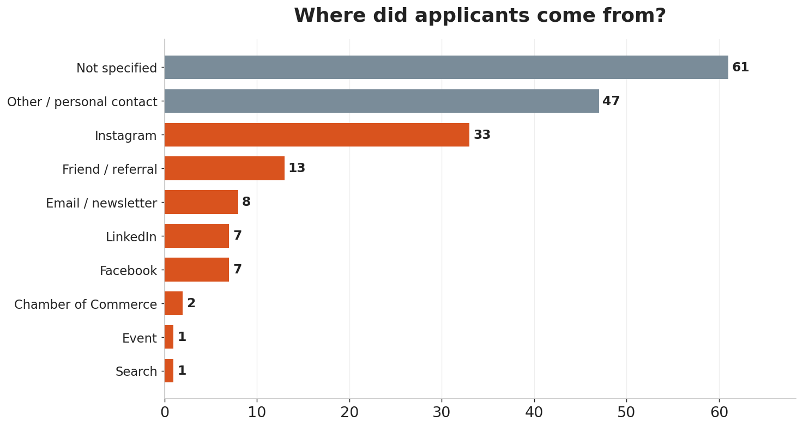
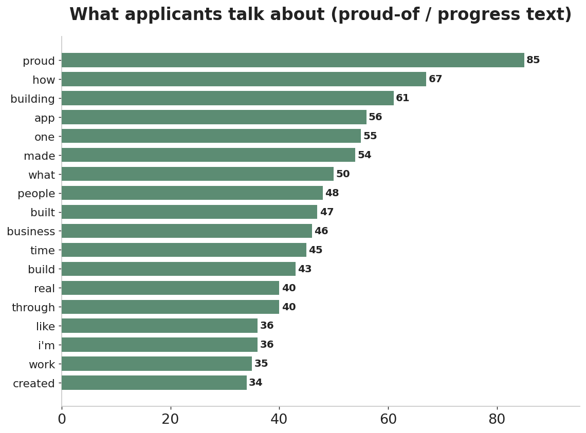
Four connectors each emit the same record shape; a source-agnostic union-find resolves one person across all of them by email or a two-token name key. A declarative table maps each signal to its growth axis, so adding a source or a signal never touches the engine.
Sources: Mailchimp (live API), Monday boards (API/MCP), Skool (member roster), Luma (event guests).
Data: participants.csv metrics.json